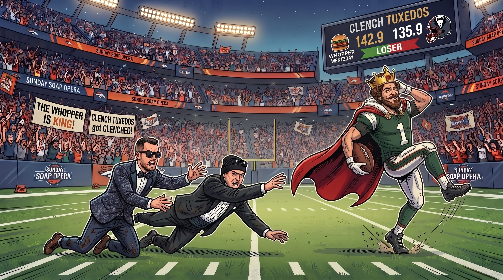

Week 8 proved that no giant is entirely safe—unless that giant is a deep-fried fast-food monarch. While Whopper Wentzday cemented their absolute dominance over the West division, the middle tier of the league has officially devolved into a chaotic, teeth-gnashing traffic jam. With Clench Tuxedos, Danger Cats, and Steeltown Junkies all deadlocked in a ferocious 4-4-0 playoff bottleneck, a sparkling 135-point night doesn't even guarantee you a win anymore as the race plunges into absolute anarchy.
In our official marquee heavyweight clash presented by Kalshi, Whopper Wentzday absorbed a massive effort from the Bi-Managers and simply burped them out, winning 142.90 to 135.90.

You almost have to laugh—or cry if you're in the Bi-Management suite. Clench Tuxedos rolled out a sparkling 135.90 points, a total that would comfortably smoke almost any other opponent on a normal Sunday. Unfortunately, 135 doesn't typically get you a win in this league when you walk straight into the cholesterol buzzsaw that is Whopper Wentzday. The King’s relentless offensive output pushed them to a ridiculous 7-1-0 record, while the Tuxedos took a brutal stray, tumbling right into the messy 4-4 traffic jam.
The upset of the month has arrived, and it is glorious. RUN CMC dragged White Bronco down into the dirt, handing the East division leaders a humiliating 137.70 to 100.60 defeat.
White Bronco’s heavily hyped roster finally ran out of Monday night miracles, stalling out barely past the century mark. After weeks of strutting around like fantasy gods, the Bronco front office spent Sunday staring blankly at their phones. Meanwhile, RUN CMC comfortably sits at 5-3-0, watching the frantic playoff picture unfold from a secure, elevated perch.
If you wanted offensive fireworks, you were in the right place. The Danger Cats woke up violently, hacking up a league-high 153.90-point hairball all over The Pain Train.
The Pain Train posted a stellar 136.65 points—yet another tragic victim of the reality that cracking 135 isn't a golden ticket anymore, dropping them to 3-5-0. They got run over while the Danger Cats used the explosive 153-point masterclass to claw their way directly into the massive 4-4 playoff bottleneck alongside Clench Tuxedos and Steeltown.
It appears Josh Almighty’s manager finally started feeding his pets. Shaking off the 33-year goldfish curse that plagued his roster last week, Josh cruised to a stress-free 128.25 to 74.30 blowout over an Autobots squad that looked completely asleep at the wheel.
The Autobots apparently entered witness protection, as half their roster failed to show up to the stadium. Deploying the bold strategy of leaving multiple roster spots entirely empty didn't quite pay off. They fall to an abysmal 2-6-0, looking more like a rusty 1998 Honda Civic than advanced alien machinery, while Almighty safely sits near the top at 5-3-0.
Steeltown Junkies handled their business efficiently, rolling over Kyler Duty 135.10 to 104.65 to officially muscle their way into that fierce three-way 4-4 playoff logjam.
As for Kyler Duty? Their brief flash of competence last week was clearly a clerical error. They instantly plummeted back to reality, joining the Autobots in the dark, damp basement of the West division at 2-6-0. Stumbling into a single win last week didn't fix the underlying rot, and their roster is once again bleeding out on the field.
Death, taxes, and Three Dots an a Dash being completely useless. Marr Burrow Smokes barely had to stretch to secure a 134.45 to 103.35 victory.
TDnD is now officially the most depressing squad in the entire league at 1-7-0. If there was a mercy rule, we would have invoked it a month ago. Marr Burrow, on the other hand, climbs to a very comfortable 5-3-0 in the West, safely watching the frantic 4-4 bottleneck teams tear each other to shreds.
Projection: Clench Tuxedos 143.99, RUN CMC 114.40
Gazette Pick: Clench Tuxedos 🔮
RUN CMC is sitting pretty at 5-3 looking to solidify their playoff standing, but Clench Tuxedos is desperate to escape the 4-4 logjam and is projecting a massive 143.99 points behind Jordan Love and a loaded receiving corps. RUN CMC finally has Christian McCaffrey slotted into their lineup, but with an open flex and kicking concerns, the Bi-Managers should take this one if they don't bicker themselves into a loss.
Projection: Marr Burrow Smokes 133.94, Steeltown Junkies 91.05
Gazette Pick: Marr Burrow Smokes 🔮
Steeltown is desperate to fight their way out of the 4-4 bottleneck, but they are dragging a broken roster into Sunday with multiple zeros from players on Bye or Out, including their defense completely missing in action. Marr Burrow Smokes is projecting a clean 133.94 points with Joe Burrow at the helm. Easy money.
Projection: Three Dots an a Dash 113.83, Autobots 90.22
Gazette Pick: Three Dots an a Dash 🔮
Welcome to the Toilet Bowl preview of the week, a true sickos game. Autobots are projecting a pathetic 90.22 points with multiple empty roster slots, boldly deploying the "if I don't set my lineup, they can't hurt me" strategy. Three Dots an a Dash is also fielding an empty slot and DK Metcalf on a Bye, but their 113.83 projection makes them the tallest midget in the room. TDnD accidentally stumbles into their second win of the year.
Projection: White Bronco 128.50, The Pain Train 112.10
Gazette Pick: White Bronco 🔮
White Bronco gets a much-needed bounce-back spot after getting humiliated by RUN CMC. The Pain Train dropped 136 points last week only to take an L because 135 isn't enough anymore, and while their spirits are broken, White Bronco’s front office is desperate to prove Week 8 was just a minor fluke. Expect Dak and CeeDee to refocus and secure the rebound win.
Projection: Whopper Wentzday 135.20, Danger Cats 119.80
Gazette Pick: Whopper Wentzday 🔮
The Danger Cats put up a massive 153 points in Week 8 to smash their way into the 4-4 logjam, but history shows whenever the felines have a big week, they immediately follow it up by coughing up a putrid hairball. Whopper Wentzday is steamrolling the entire league at 7-1 and leads in scoring by a mile. The Burger King keeps rolling.
Projection: Josh Almighty 129.40, Kyler Duty 101.15
Gazette Pick: Josh Almighty 🔮
Now that the 33-year goldfish karma tax is fully settled, Josh Almighty looks like a legitimate threat to steal the East division. Kyler Duty fell right back into the division basement where they belong, and unless Bo Nix pulls off a 40-point miracle, Almighty cruises to another easy victory.